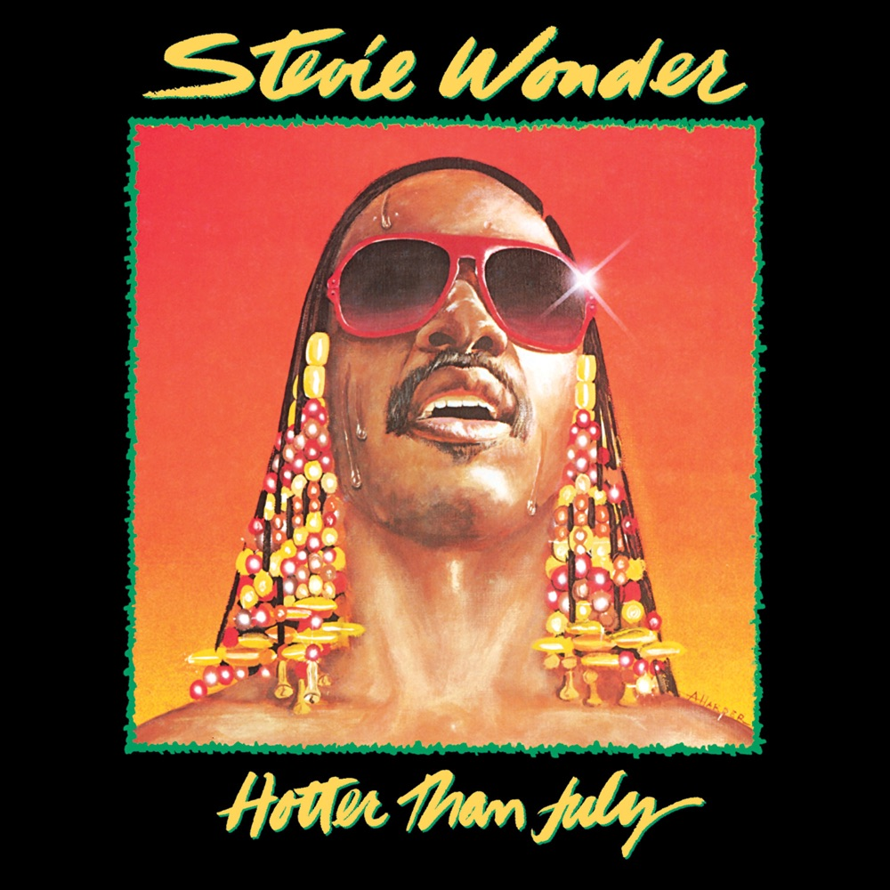
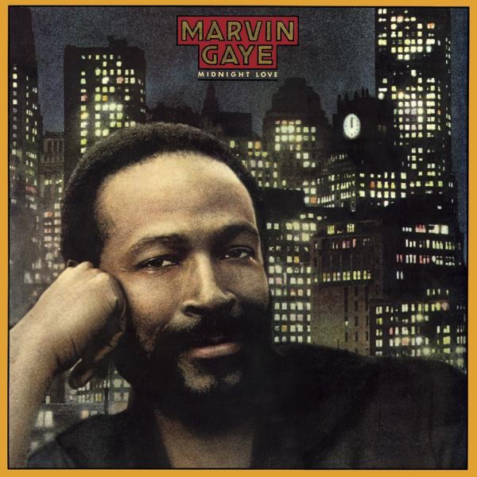
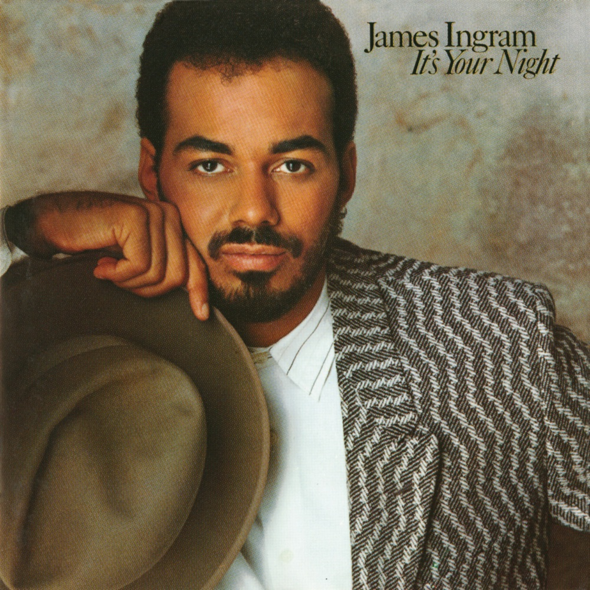
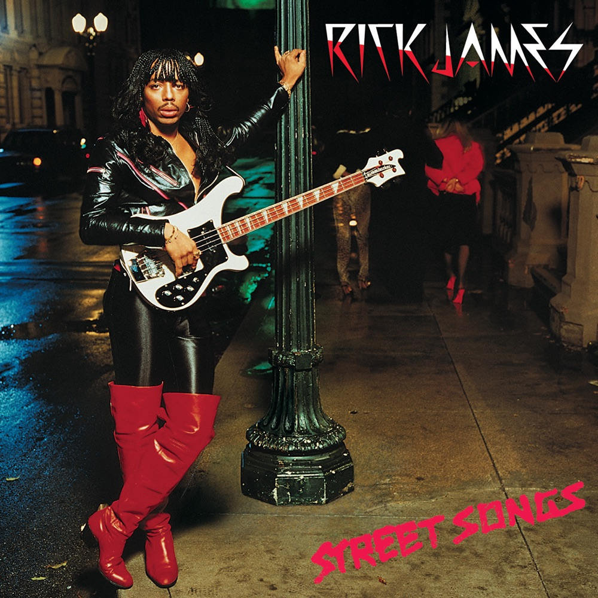
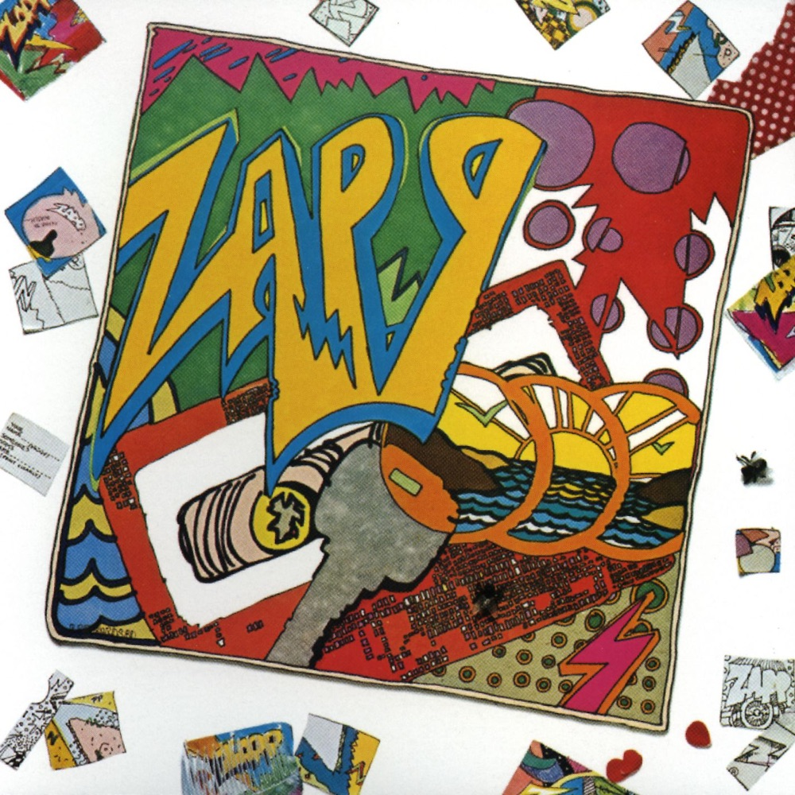
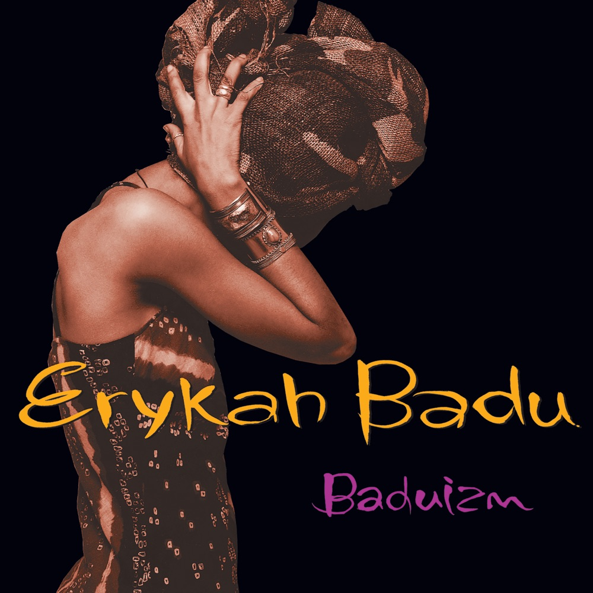
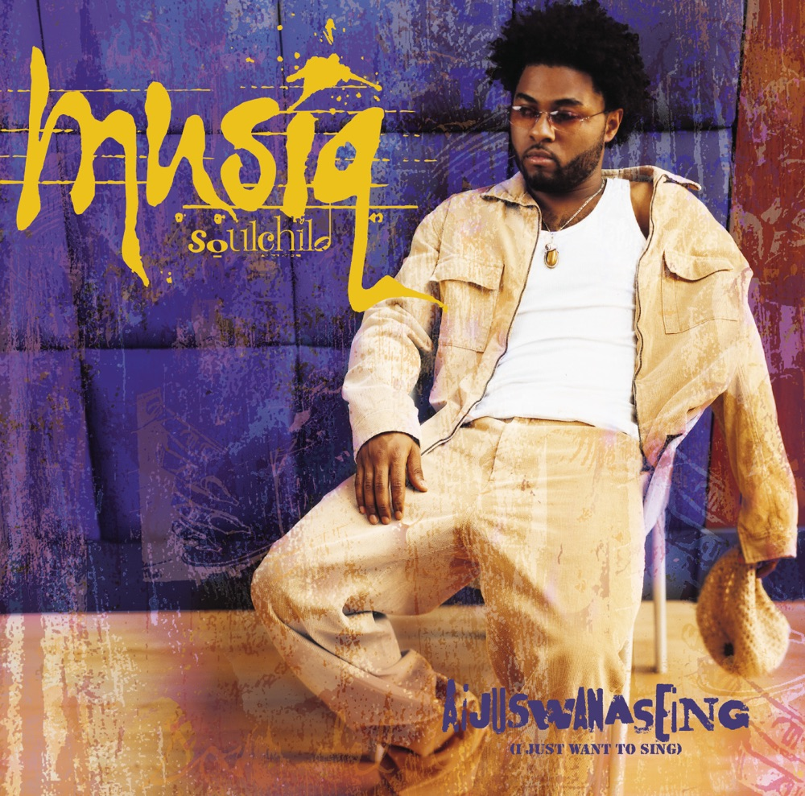

ENOCH MUSIC ACADEMYENOCH LISTENING







7RECORDS
Funk · R&B · Neo Soul
그루브를 배우는
일곱 장의 레코드
80년대 펑크 · R&B에서 네오소울까지.
한 장씩 꺼내 들어 보세요.
펑크 · R&B · 네오소울01 / 07
ENOCH MUSIC ACADEMYENOCH LISTENING
Why These Records
80년대의 리듬,
네오소울까지
80년대엔 드럼머신과 신시사이저가 R&B 한가운데로 들어왔습니다.
90년대 후반 네오소울은 옛 소울과 펑크의 결을 다시 꺼내 왔고요.
시대는 달라도, 그루브를 듣는 귀는 같아요.
Bass리프 하나가 곡 전체를 끌고 갑니다.
Drums드럼머신과 사람이 친 드럼, 박의 느낌을 비교해 보세요.
Voice리듬 위에서 말하듯 부르는 보컬과 겹겹이 쌓인 코러스.
펑크 · R&B · 네오소울02 / 07
ENOCH MUSIC ACADEMYENOCH LISTENING
01
Stevie Wonder
Hotter Than July1980
TRACKMaster Blaster (Jammin')
LISTEN레게 리듬 위에 얹힌 베이스와 코러스
02
Marvin Gaye
Midnight Love1982
TRACKSexual Healing
LISTEN드럼머신 위에서 보컬이 박을 타는 방식
03
James Ingram
It's Your Night1983
TRACKYah Mo B There
LISTEN두 보컬이 주고받는 소리와 화음
펑크 · R&B · 네오소울03 / 07
ENOCH MUSIC ACADEMYENOCH LISTENING
04
Rick James
Street Songs1981
TRACKGive It to Me Baby
LISTEN반복되는 베이스 리프와 브라스
05
Zapp
Zapp1980
TRACKMore Bounce to the Ounce
LISTEN토크박스, 단순한 리프가 만드는 그루브
펑크 · R&B · 네오소울04 / 07
ENOCH MUSIC ACADEMYENOCH LISTENING
06
Erykah Badu
Baduizm1997
TRACKOn & On
LISTEN뒤로 살짝 기대는 듯한 느긋한 박
07
Musiq Soulchild
Aijuswanaseing2000
TRACKJust Friends (Sunny)
LISTEN말하듯 짧게 끊어 부르는 프레이징
펑크 · R&B · 네오소울05 / 07
ENOCH MUSIC ACADEMYHOW TO LISTEN
한 곡을,
세 번 들어 보기
1처음엔 그냥
분석하지 말고 끝까지. 몸이 먼저 반응하는 곳을 기억해 두세요.
2두 번째는 한 악기만
베이스만, 혹은 드럼만 따라가 봅니다. 노래도 연주도 여기서 박을 배워요.
3세 번째는 따라 하기
한 소절만 따라 부르거나 쳐 보고, 녹음해서 원곡과 나란히 들어 보세요.
펑크 · R&B · 네오소울06 / 07
ENOCH MUSIC ACADEMYTHE ENOCH WAY
ENOCH
기본은
건너뛰지 않습니다.
좋은 그루브는 많이 들은 귀에서 나옵니다.
옛 레코드를 듣는 것도, 기본의 일부.
ENOCH은 모든 과정이 1:1 레슨입니다.
에녹실용음악학원 시흥점
경기도 시흥시 은행로 157 2층010 3949 3666
Vocal · Guitar · Drum · Bass · Piano · MIDI · 작곡
펑크 · R&B · 네오소울07 / 07